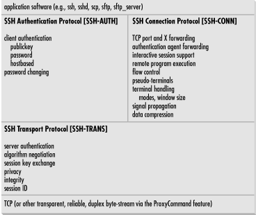

|  |
3.5. Inside SSH-2
In this section, we discuss the design and internals of SSH-2, focusing particularly on its differences and improvements as compared to SSH-1. We won't repeat the information common to the two protocols. We also compare the products SSH1 and SSH2, their software implementation differences, and their protocol support. Figure 3-4 summarizes the architecture of SSH-2.Figure 3-4. SSH-2 architecture
The most important distinction between SSH1 and SSH2 is that they support different, incompatible versions of the SSH protocol: SSH-1.5 and SSH-2.0. [Section 1.5, "History of SSH"] These products also have important implementation differences, some due to the differing protocols, but many are simply omissions due to SSH2's being a complete rewrite.3.5.1. Protocol Differences (SSH-1 Versus SSH-2)
SSH-1 is monolithic, encompassing multiple functions in a single protocol. SSH-2, on the other hand, has been separated into modules and consists of three protocols working together:- SSH Transport Layer Protocol (SSH-TRANS)
- SSH Authentication Protocol (SSH-AUTH)
- SSH Connection Protocol (SSH-CONN)

Figure 3-5. SSH-2 protocol family
Next, the client can use SSH-AUTH over the SSH-TRANS connection to authenticate itself to the server. SSH-AUTH defines three authentication methods: publickey, hostbased, and password. Publickey is similar to the SSH-1 "RSA" method, but it is more general and can accommodate any public-key signature algorithm. The standard requires only one algorithm, DSA, since RSA until recently was encumbered by patent restrictions.[31] Hostbased is similar to the SSH-1 RhostsRSA method, providing trusted-host authentication using cryptographic assurance of the client host's identity. The password method is equivalent to SSH-1's password authentication; it also provides for changing a user's password, though we haven't seen any implementations of this feature. The weak, insecure Rhosts authentication of SSH-1 is absent.[31]RSA entered the public domain in September 2000, after many years as a patented algorithm.Finally, the SSH-CONN protocol provides a variety of richer services to clients over the single pipe provided by SSH-TRANS. This includes everything needed to support multiple interactive and noninteractive sessions: multiplexing several streams (or channels) over the underlying pipe; managing X, port, and agent forwarding; forwarding application signals across the connection (such as SIGWINCH, indicating terminal window resizing); terminal handling; data compression; and remote program execution. Unlike SSH-1, SSH-CONN can handle multiple interactive sessions over the same connection, or none. This means SSH-2 supports X or port forwarding without the need for a separate terminal session, which SSH-1 can't do. Note that SSH-CONN isn't layered on SSH-AUTH; they are both at the same level above SSH-TRANS. A specialized SSH server for a particular, limited purpose might not require authentication. Perhaps it just prints out "Nice to meet you!" to anyone who connects. More practically, an anonymous sftp server might provide freely available downloads to all comers. Such a server could simply allow a client to engage in SSH-CONN immediately after establishing an SSH-TRANS connection, whereas a general login server would always require successful authentication via SSH-AUTH first. We now survey the major differences between SSH-1 and SSH-2. These include:
- Expanded algorithm negotiation between client and server
- Multiple methods for key-exchange
- Certificates for public keys
More flexibility with authentication, including partial authentication
Stronger integrity checking through cryptography
Periodic replacement of the session key ("rekeying")
3.5.1.1. Algorithm choice and negotiation
A nice feature of SSH-1 is algorithm negotiation, in which a client selects a bulk encryption cipher from among those supported by the server. Other algorithms within SSH-1, however, are hardcoded and inflexible. SSH-2 improves upon this by making other algorithms negotiable between client and server: host key, message authentication, hash function, session key exchange, and data compression. SSH-2 requires support of one method per category to ensure interoperability and defines several other recommended and optional methods. [Section 3.9, "Algorithms Used by SSH"] Another improvement of SSH-2 is an extensible namespace for algorithms. SSH-1 identifies the negotiable bulk ciphers by a numerical code, with no values set aside for local additions. In contrast, SSH-2 algorithms (as well as protocols, services, and key/certificate formats) are named by strings, and local definitions are explicitly supported. From SSH-ARCH: "Names that do not contain an at-sign (@) are reserved to be assigned by IANA (Internet Assigned Numbers Authority). Examples include 3des-cbc, sha-1, hmac-sha1, and zlib. Additional names of this format may be registered with IANA [and] MUST NOT be used without first registering with IANA. Registered names MUST NOT contain an at-sign (@) or a comma (,). Anyone can define additional algorithms by using names in the format name@domainname, e.g., ourciphercbc@ssh.fi. The format of the part preceding the at sign is not specified; it must consist of US-ASCII characters except at-sign and comma. The part following the at-sign must be a valid fully qualified internet domain name [RFC-1034] controlled by the person or organization defining the name. Each domain decides how it manages its local namespace." This format allows new, nonstandard algorithms to be added for internal use without affecting interoperability with other SSH-2 implementations, even those with other local additions. OpenSSH makes use of this ability, defining an integrity-checking algorithm called hmac-ripemd160@openssh.com.3.5.1.2. Session key exchange and the server key
Recall that the session key is the shared symmetric key for the bulk data cipher -- the one used directly to encrypt user data passing over the SSH connection. [Section 3.3, "The Architecture of an SSH System"] In SSH-1, this key is generated by the client and passed securely to the server by double-encrypting it with the server key and server's host key. The server key's purpose is to provide perfect forward secrecy. [Section 3.4.1, "Establishing the Secure Connection"] In keeping with its design, SSH-2 introduces a more general mechanism to accommodate multiple key-exchange methods, from which one is negotiated for use. The chosen method produces a shared secret that isn't used directly as the session key, but rather is input to a further process that produces the session key. The extra processing ensures that neither side can fully determine the session key (regardless of the exchange method used) and provides protection against replay attacks. [Section 3.1.2, "Integrity "] The key-exchange phase of the SSH-2 protocol is also responsible for server authentication, as in SSH-1. SSH-2 currently defines only one key-exchange method, diffie-hellman-group1-sha1, and all implementations must support it. As the name implies, it is the Diffie-Hellman key-agreement algorithm with a fixed group,[32] together with the SHA-1 hash function. The Diffie-Hellman algorithm provides forward secrecy by itself, so no server key is needed. Also, independent of the processing just described, the Diffie-Hellman algorithm alone ensures that neither side can dictate the shared secret.[32]A group is a mathematical abstraction relevant to the Diffie-Hellman procedure; see references on group theory, number theory, or abstract algebra if you're curious.diffie-hellman-group1-sha1 already provides forward secrecy, so SSH-2 implementations using it don't need a server key. Since other key-exchange methods may be defined for SSH-2, someone could conceivably implement the SSH-1 key-exchange algorithm, requiring a server key or similar method to provide perfect forward secrecy. But such a method hasn't been defined, so server keys are found only in SSH1 and OpenSSH/1. Therefore, an SSH-2-only server is more amenable to control by inetd, since it avoids the overhead of generating a server key on startup. [Section 5.4.3.2, "Invocation by inetd"] Examples are SSH2, or OpenSSH with SSH-1 support turned off.
3.5.1.3. Key/identity binding
In any public-key system, a crucial problem is verifying the owner of a key. Suppose you want to share encrypted messages with your friend Alice, but an intruder, Mallory, tricks you into accepting one of his public keys as Alice's. Now any messages you encrypt (supposedly) to Alice are readable by Mallory. Of course, you and Alice will quickly discover the problem when she finds that she can't decrypt your messages, but by then the damage is done. The key-ownership problem is addressed using a technique called public-key certificates. A certificate is a data structure attesting that a trusted third party vouches for the key's owner. More precisely, the certificate attests to the binding between a public key and a particular identity (a personal or company name, email address, URL, etc.), or an ability (the right to access a database, modify a file, log into an account, etc.). The attestation is represented by a digital signature from the third party. So in our example, you and Alice could arrange for a trusted third party, Pete, to sign your respective public keys, and you would therefore not believe Mallory's bogus, unsigned key. This is all well and good, but who vouches for the voucher? How do you know the signer of Alice's key is really Pete? This problem continues recursively, as you need the signer's public key, and a certificate for that, and so on. These chains of certificates can be arranged in a hierarchy rooted at well-known Certificate Authorities, or they may be arranged in a decentralized network, the so-called "web of trust" used by PGP. Such arrangements, or trust models, are the basis for a public-key infrastructure (PKI). In SSH, the key-ownership problem shows up in the bindings between hostnames and host keys. In all current SSH implementations, this is done using simple databases of hostnames, addresses, and keys which must be maintained and distributed by the user or system administrator. This isn't a scalable system. SSH-2 permits certificates to be included with public keys, opening the door for PKI techniques. The current SSH-2 specification defines formats for X.509, SPKI, and OpenPGP certificates, although no current SSH implementation supports their use. Certificates, in theory, can also apply to user authentication. For instance, a certificate can bind a username to a public key, and SSH servers can accept valid certificates as authorization for the private key holder to access an account. This system provides the benefits of hostbased authentication without the fragile dependence on peer host security. If PKIs become more common, perhaps such features will appear.3.5.1.4. Authentication
In order to authenticate, an SSH-1 client tries a sequence of authentication methods chosen from the set allowed by the server -- public-key, password, trusted host, etc. -- until one succeeds or all fail. This method is an all-or-nothing proposition; there's no way for a server to require multiple forms of authentication, since as soon as one method succeeds, the authentication phase ends. The SSH-2 protocol is more flexible: the server informs the client which authentication methods are usable at any point in the exchange, as opposed to just once at the beginning of the connection, as in SSH-1. Thus, an SSH-2 server can, for example, decide to disallow public-key authentication after two unsuccessful attempts but still continue allowing the password method only. One use of this feature is interesting to note. SSH-2 clients usually first make an authentication request using a special method, "none." It always fails and returns the real authentication methods permitted by the server. If you see puzzling references in the SSH logs indicating that the method "none" has "failed," now you know what's going on (and it's normal). An SSH-2 server also may indicate partial success: that a particular method succeeded, but further authentication is necessary. The server therefore can require the client to pass multiple authentication tests for login, say, both password and hostbased. The SSH2 server configuration keyword RequiredAuthentications controls this feature, which OpenSSH/2 currently lacks. [Section 5.5.1, "Authentication"]3.5.1.5. Integrity checking
Improving on SSH-1's weak CRC-32 integrity check, SSH-2 uses cryptographically strong Message Authentication Code (MAC) algorithms to provide integrity and data origin assurance. The MAC methods and keys for each direction (separate from the session encryption keys) are determined during the key-exchange phase of the protocol. SSH-2 defines several MAC algorithms, and requires support for hmac-sha1, a 160-bit hash using the standard keyed HMAC construction with SHA-1. (See RFC-2104, "HMAC: Keyed-Hashing for Message Authentication.")3.5.1.6. Hostbased authentication
An SSH server needs some sort of client host identifier to perform hostbased authentication. Specifically, it needs this for two operations:- Looking up the client host key
- Matching the client host while performing authorization via the hostbased control files (shosts.equiv, etc.)
- Mobile client with a changing IP address (e.g., a laptop being carried around and connected to different networks)
- Client behind a network-visible proxy, such as SOCKS
- Client with multiple network addresses ("multihomed"), unless the corresponding DNS entries are arranged in a particular way
3.5.1.7. Session rekeying
The more data that's encrypted with a particular key and available for analysis, the better an attacker's chances of breaking the encryption. It is therefore wise to periodically change keys if large amounts of data are being encrypted. This isn't much of an issue with asymmetric keys, since they are typically used only to encrypt small amounts of data, producing digital signatures over hash values or encrypting symmetric keys. A key for the bulk data cipher of an SSH connection, however, might encrypt hundreds of megabytes of data, if it's being used to transfer large files or perform protected backups, for example. The SSH-2 protocol provides a way for either side of an SSH connection to initiate a re-keying of the session. This causes the client and server to negotiate new session keys and take them into use. SSH-1 doesn't provide a way to change the bulk cipher key for a session.3.5.1.8. SSH-1/SSH-2: summary
Table 3-3 summarizes the important differences between Versions 1.5 and 2.0 of the SSH protocol.Table 3-3. SSH-1 and SSH-2 Differences
| SSH-2 | SSH-1 |
|---|---|
| Separate transport, authentication, and connection protocols. | One monolithic protocol. |
| Strong cryptographic integrity check. | Weak CRC-32 integrity check. |
| Supports password changing. | N/A |
| Any number of session channels per connection (including none). | Exactly one session channel per connection (requires issuing a remote command even when you don't want one). |
| Full negotiation of modular cryptographic and compression algorithms, including bulk encryption, MAC, and public-key. | Negotiates only the bulk cipher; all others are fixed. |
| Encryption, MAC, and compression are negotiated separately for each direction, with independent keys. | The same algorithms and keys are used in both directions (although RC4 uses separate keys, since the algorithm's design demands that keys not be reused). |
| Extensible algorithm/protocol naming scheme allows local extensions while preserving interoperability. | Fixed encoding precludes interoperable additions. |
User authentication methods:
|
Supports a wider variety:
|
| Use of Diffie-Hellman key agreement removes the need for a server key. | Server key used for forward secrecy on the session key. |
| Supports public-key certificates. | N/A |
| User authentication exchange is more flexible and allows requiring multiple forms of authentication for access. | Allows exactly one form of authentication per session. |
| Hostbased authentication is in principle independent of client network address, and so can work with proxying, mobile clients, etc. (but see Section 3.5.1.6, "Hostbased authentication"). | RhostsRSA authentication is effectively tied to the client host address, limiting its usefulness. |
| Periodic replacement of session keys. | N/A |
3.5.2. Implementation Differences
There are many differences among the current crop of SSH-1 and SSH-2 implementations. Some are direct results of the different protocols, such as the ability to require multiple forms of authentication or support of the DSA public-key algorithm. Others are feature differences that aren't dictated by the protocols, but are simply inclusions or omissions by the software authors. Here we discuss some nonprotocol-related design and feature differences among OpenSSH, SSH1, and SSH2:- Host keys
- No fallback to rsh
- Setuid client
SSH-1 backward compatibility
3.5.2.1. Host keys
SSH host keys are long-term asymmetric keys that distinguish and identify hosts running SSH, or instances of the SSH server, depending on the SSH implementation. This happens in two places in the SSH protocol:- Server authentication verifying the server host's identity to
connecting clients. This process occurs for every SSH
connection.[33]
[33]In SSH-1, the host key also encrypts the session key for transmission to the server. However, this use is actually for server authentication, rather than for data protection per se; the server later proves its identity by showing that it correctly decrypted the session key. Protection of the session key is obtained by encrypting it a second time with the ephemeral server key.
- Authentication of a client host to the server; used only during RhostsRSA or hostbased user authentication.
[34]Or sharing the same key, if you wish, assuming the servers are compatible with one another.SSH1 maintains a single database serving both server authentication and client authentication. It is the union of the system known_hosts file ( /etc/ssh_known_hosts), together with the user's ~/.ssh/known_hosts file on either the source machine (for server authentication) or the target machine (for client authentication). The database maps a hostname or address to a set of keys acceptable for authenticating a host with that name or address. One name may be associated with multiple keys (more on this shortly). SSH2, on the other hand, maintains two separate maps for these purposes: Hooray, more confusing terminology. Here, the term "known hosts" is reused with slightly different formatting (knownhosts versus known_hosts) for an overlapping but not identical purpose. While SSH1 keeps host keys in a file with multiple entries, SSH2 stores them in a filesystem directory, one key per file, indexed by filename. For instance, a knownhosts directory looks like:
Note that the filename is of the form <hostname>.< key type>.pub. The other map, hostkeys, is keyed not just on name/address, but also on the server's TCP listening port; that is to say, it is keyed on TCP sockets. This allows for multiple keys per host in a more specific manner than before. Here, the filenames are of the form key_ < port number > _ <hostname> .pub. The following example shows the public keys for one SSH server running on wynken, port 22, and two running on blynken, ports 22 and 220. Furthermore, we've created a symbolic link to make "nod" another name for the server at wynken:22. End users may add to these maps by placing keys (either manually or automatically by client) into the directories ~/.ssh2/knownhosts and ~/.ssh2/hostkeys.$ ls -l /etc/ssh2/knownhosts/ total 2 -r -- r -- r -- 1 root root 697 Jun 5 22:22 wynken.sleepy.net.ssh-dss.pub -r -- r -- r -- 1 root root 697 Jul 21 1999 blynken.sleepy.net.ssh-dss.pub
$ ls -l /etc/ssh2/hostkeys/
total 5
-rw-r--r-- 1 root root 757 May 31 14:52 key_22_blynken.sleepy.net.pub
-rw-r--r-- 1 root root 743 May 31 14:52 key_22_wynken.sleepy.net.pub
-rw-r--r-- 1 root root 755 May 31 14:52 key_220_wynken.sleepy.net.pub
lrwxrwxrwx 1 root root 28 May 31 14:57 key_22_nod.pub ->
key_22_wynken.sleepy.net.publogin1.foo.eduIn addition, there is a single generic name that carries all three addresses:10.0.0.1 login2.foo.edu
login.foo.eduThe university computing center tells people to connect only to login.foo.edu, and the university's naming service hands out the three addresses in round-robin order (e.g., using round-robin DNS) to share the load among the three machines. SSH has problems with this setup by default. Each time you connect to login.foo.edu, you have a 2/3 chance of reaching a different machine than you reached last time, with a different host key. SSH repeatedly complains that the host key of login.foo.com has changed and issues a warning about a possible attack against your client. This soon gets annoying. With SSH1, you can edit the known_hosts file to associate the generic name with each of the individual host keys, changing this:
to this:login1.foo.edu 1024 35 1519086808544755383... login2.foo.edu 1024 35 1508058310547044394... login3.foo.edu 1024 35 1087309429906462914...
With SSH2, however, there's no general way to do this; since the database is indexed by entries in a directory, with one key per file, it can't have more than one key per name. It might seem that you're losing some security by doing this, but we don't think so. All that's really happening is the recognition that a particular name may refer to different hosts at different times, and thus you tell SSH to trust a connection to that name if it's authenticated by any of a given set of keys. Most of the time, that set happens to have size 1, and you're telling SSH, "When I connect to this name, I want to make sure I'm connecting to this particular host." With multiple keys per name, you can also say, "When I connect to this name, I want to make sure that I get one of the following set of hosts." That's a perfectly valid and useful thing to do. Another way to solve this problem is for the system administrators of login. foo.com to install the same host key on all three machines. But this defeats the ability for SSH to distinguish between these hosts, even if you want it to. We prefer the former approach.login1.foo.edu,login.foo.edu 1024 35 1519086808544755383... login2.foo.edu,login.foo.edu 1024 35 1508058310547044394... login3.foo.edu,login.foo.edu 1024 35 1087309429906462914...
3.5.2.2. No fallback to rsh
Not only does SSH1 support rsh-style authentication, but also ssh can invoke rsh automatically if a remote host has no SSH server running. Along with Rhosts authentication support, this feature is deliberately absent from SSH2, due to the poor security of rsh. [Section 7.4.5.8, "RSH issues"]3.5.2.3. Setuid client
The SSH1 client needs to be installed as setuid root in order to use RhostsRSA authentication. There are two reasons for this: host key access and privileged source ports. The privileged port requirement from the client is a holdover from rsh-style authentication that adds no security to RhostsRSA, and that requirement has been dropped from SSH2 hostbased authentication. [Section 3.4.2.3, "Trusted-host authentication (Rhosts and RhostsRSA)"] The remaining reason for a setuid client is access to the private host key file. The host key is stored unencrypted, so SSH can access it without a human to type a passphrase. Therefore the file containing the private host key must be protected from general read access. The SSH server usually runs as root for other reasons, and so can read any file. The client, though, is run by ordinary users, yet must have access to the private host key to engage in trusted-host authentication. The file is usually installed as readable only by the root user, and so the client needs to be setuid root. Now, on general security grounds, one tries to avoid installing setuid programs if at all possible -- most especially those that setuid to root. Any such program must be carefully written to prevent abuse. Preferably, a setuid program should be small and simple with little user interaction. The big, complicated SSH client, which talks constantly with users as well as other machines, is definitely not a safe candidate. SSH2 sidesteps this problem by introducing the ssh-signer2 program. ssh-signer2 factors into a separate program that portion of the client that requires access to the private host key. It speaks the SSH packet protocol on its standard input and output and takes as input a hostbased authentication request to be signed. It carefully checks the request for validity; most particularly, it checks that the username in the request is that of the user running ssh-signer2, and that the hostname is the canonical name of the current host. If the request is valid, ssh-signer2 signs the request with the host key and returns it. Since ssh-signer2 is a relatively small and simple, it is easier to be confident that it is securely written and safe to make setuid. In turn, the SSH client itself is no longer setuid; when it needs to sign a hostbased authentication request, it runs ssh-signer2 as a subprocess to get the signature. Although the SSH2 installation process makes the private host key readable only by root, and ssh-signer2 setuid root, there is no real need to use the root account for this purpose, and indeed every reason not to. It suffices to create a new, unprivileged user for this specific purpose, say, "ssh." It should be a locked account with no password and no way to log into it, and the account information should be stored in local files (e.g., /etc/passwd, /etc/group) rather than NIS. You should then make the host key file readable only by this account and make ssh-signer2 setuid and owned by it. For example:This has the same effect as the default installation and is even less risky since it doesn't involve a setuid root program. You can do the same thing with ssh1, but it renders trusted-host authentication unusable, since the server demands a privileged source port for the RhostsRSA mechanism.# chown ssh /etc/ssh_host_key # chmod 400 /etc/ssh_host_key # chown ssh /usr/local/bin/ssh-signer2 # chmod 04711 /usr/local/bin/ssh-signer2
3.5.2.4. SSH-1 backward compatibility
SSH2 can provide backward compatibility for the SSH-1 protocol if the entire SSH1 package is also installed on the same machine. The SSH2 client and server simply run their SSH1 counterparts when they connect to a partner running the older protocol. This is rather cumbersome. It's also wasteful and slow, since each new sshd1 needs to generate its own server key, which otherwise the single master server only regenerates once an hour. This wastes entropy, sometimes a precious commodity, and can cause noticeable delays in the startup of SSH-1 connections to an SSH2 server. Further, it is an administrative headache and a security problem, since one must maintain two separate SSH server configurations and try to make sure all desired restrictions are adequately covered in both. Beginning with Version 2.1.0, OpenSSH supports both SSH-1 and SSH-2 in a single set of programs, though the support isn't yet as complete as that found in SSH2. (For example, hostbased authentication is missing; this doesn't affect compliance with SSH-2, though, since that support is optional.) This technique avoids the problems inherent in the SSH2 mechanism. The SSH-1 protocol is still considered the primary option; if you're contacting a server that supports both protocols, the OpenSSH client uses SSH-1. You can force it to use SSH-2 with the -2 switch, or the "protocol 2" configuration statement. |  | |
| 3.4. Inside SSH-1 |  | 3.6. As-User Access |